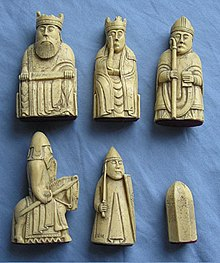

"Chess is believed to have originated in Eastern India, c. 280–550, in the Gupta Empire, where its early form in the 6th century was known as chaturaṅga, literally four divisions [of the military] – infantry, cavalry, elephants, and chariotry, represented by the pieces that would evolve into the modern pawn, knight, bishop, and rook, respectively. Thence it spread eastward and westward along the Silk Road. The earliest evidence of chess is found in the nearby Sassanid Persia around 600, where the game came to be known by the name chatrang. Chatrang was taken up by the Muslim world after the Islamic conquest of Persia (633–44), where it was then named shatranj, with the pieces largely retaining their Persian names. In Spanish "shatranj" was rendered as ajedrez ("al-shatranj"), in Portuguese as xadrez, but in the rest of Europe it was replaced by versions of the Persian shāh ("king"), which was familiar as an exclamation and became the English words "check" and "chess". The oldest archaeological chess artifacts, ivory pieces, were excavated in ancient Afrasiab, today's Samarkand, in Uzbekistan, central Asia, and date to about 760, with some of them possibly older. The oldest known chess manual was in Arabic and dates to 840–850, written by al-Adli ar-Rumi (800–870), a renowned Arab chess player, titled Kitab ash-shatranj (Book of the chess). This is a lost manuscript, but referenced in later works."

"The eastern migration of chess, into China and Southeast Asia, has even less documentation than its migration west. The first reference to chess, called Xiang Qi, in China comes in dating to about 800. Alternatively, some contend that chess arose from Chinese chess or one of its predecessors, although this has been contested. The game reached Western Europe and Russia by at least three routes, the earliest being in the 9th century. By the year 1000, it had spread throughout Europe. Introduced into the Iberian Peninsula by the Muslims in the 10th century, it was described in a famous 13th-century manuscript covering shatranj, backgammon, and dice named the Libro de los juegos. Around 1200, the rules of shatranj started to be modified in southern Europe, and around 1475, several major changes made the game essentially as it is known today. These modern rules for the basic moves had been adopted in Italy and Spain.[38][39] Pawns gained the option of advancing two squares on their first move, while bishops and queens acquired their modern abilities. The queen replaced the earlier vizier chess piece towards the end of the 10th century and by the 15th century had become the most powerful piece; consequently modern chess was referred to as "Queen's Chess" or "Mad Queen Chess"."
"Castling, derived from the "kings leap" usually in combination with a pawn or rook move to bring the king to safety, was introduced. These new rules quickly spread throughout western Europe. The rules concerning stalemate were finalized in the early 19th century. Also in the 19th century, the convention that White moves first was established (formerly either White or Black could move first). Finally, the rules around castling were standardized – variations in the castling rules had persisted in Italy until the late 19th century. The resulting standard game is sometimes referred to as Western chess or international chess, particularly in Asia where other games of the chess family such as xiangqi are prevalent. Since the 19th century, the only rule changes have been technical in nature, for example establishing the correct procedure for claiming a draw by repetition."